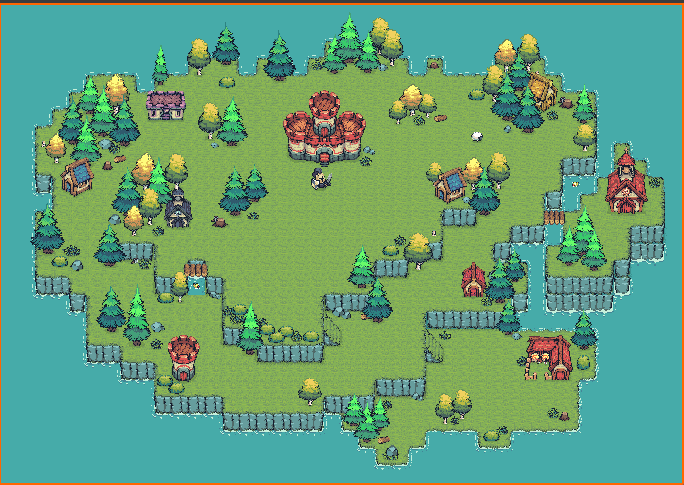

Unity · WebGL prototype
Get the heck away from them sheep. Ya got one job.
A tiny demo of the gameplay in progress. The real game is on Unity Play.
SheepChase is a survival game with a single rule: keep your distance from the sheep for as long as you can.
The flock never stops coming. You walk the field, read where the sheep are heading, and stay out of reach. The run lasts until they catch up.
Walk. Eight-direction movement across the field.
Attack. The swing animation is in; hit detection and damage are still being built.

WASD walking with a character that turns to face the direction of travel.
Every sheep tracks the player and closes the gap.
Left click triggers the attack clip through the Animator.
One rule and two inputs was enough to get a playable build online and in front of players.
Chase speed decides whether the game feels tense or unfair. Write down the numbers you landed on.
Replace this with your own plan once combat lands: a timer on screen, a best-time record, or harder waves.